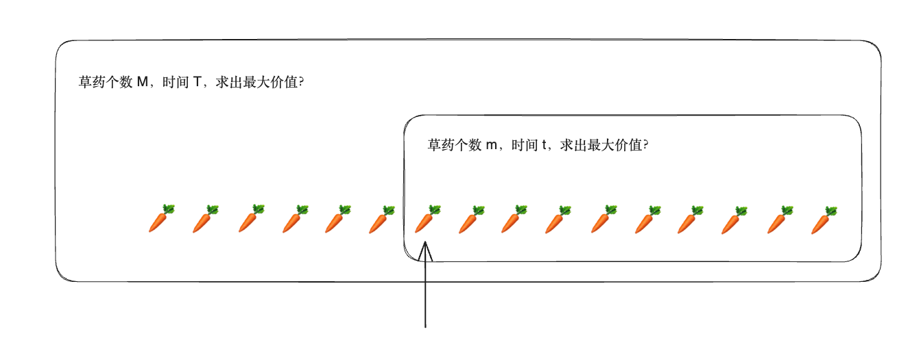

动态规划
Table of Contents
记忆化搜索 - 引出动态规划
山洞里有 \(M\) 株不同的草药，采每一株都需要一些时间 \(t_i\)，每一株也有它自身的价值 \(v_i\)。给你一段时间 \(T\)，在这段时间里，你可以采到一些草药。让采到的草药的总价值最大。
\(1 \leq T \leq 10^3, 1 \leq t_i, v_i, M \leq 100\)
朴素的 DFS 做法：
cost = [0] * (100 + 5) # 采摘草药的时间 get = [0] * (100 + 5) # 草药的价值 res, T, M = 0, 0, 0 # 准备选第几个物品、剩余的时间、已经获得的价值 def dfs(pos, tleft, value): global res, T, M if tleft < 0: return if pos == M: res = max(res, value) return dfs(pos + 1, tleft, value) dfs(pos + 1, tleft - cost[pos], value + get[pos]) def main(): global res, T, M T, M = map(lambda x:int(x), input().split()) for i in range(M): cost[i], get[i] = map(lambda x:int(x), input().split()) dfs(0, T, 0) print(res) main()
每株草药都有选与不选两种状态，时间复杂度是指数级别。同一个状态（pos, tleft）会被多次访问，所以效率较低。
为了增加效率，可以在查询完一个状态后，将该状态存储下来，避免重复计算。

使用记忆化搜索优化
增加
mem数组记录每个dfs(pos, tleft)的返回值。mem中的初始值设为-1，访问时如果是-1就继续递归访问，否则直接返回mem中存储的值。
import sys cost = [0] * (100 + 5) # 采摘草药的时间 get = [0] * (100 + 5) # 草药的价值 mem = [[-1 for i in range(1005)] for j in range(105)] # 记忆数组 inf = 0x3f3f3f3f res, T, M = 0, 0, 0 # T 总时间 # M 草药总数 def dfs(pos, tleft) -> int: if pos == M: return 0 if mem[pos][tleft] != -1: return mem[pos][tleft] dfs1 = dfs2 = -inf dfs1 = dfs(pos+1, tleft) if tleft >= cost[pos]: dfs2 = dfs(pos+1, tleft-cost[pos]) + get[pos] mem[pos][tleft] = max(dfs1, dfs2) return mem[pos][tleft] def main(): # sys.stdin = open('input.txt', 'r') # sys.stdout = open('output.txt', 'w') global res, T, M T, M = map(lambda x:int(x), input().split()) for i in range(M): cost[i], get[i] = map(lambda x:int(x), input().split()) res = dfs(0, T) print(res) main()
递推
记忆化搜索和递推都可以用来求解动态规划问题。不同的是，递推通过明确的访问顺序来避免重复访问，记忆化搜索通过给已经访问过的状态打标记的方式避免重复访问。
import sys cost = [0] * (100 + 5) # 采摘草药的时间 get = [0] * (100 + 5) # 草药的价值 res, T, M = 0, 0, 0 # T 总时间 # M 草药总数 f = [[0 for i in range(1005)] for j in range(105)] def iteration() -> int: # t 时间 # m 数量 # -> v 价值 for i in range(1, M+1): # 第几个 for j in range(0, T+1): # 剩余时间 f[i][j] = f[i-1][j] # 不选择当前草药 if j >= cost[i]: f[i][j] = max(f[i][j], f[i-1][j-cost[i]] + get[i]) return f[M][T] def main(): # sys.stdin = open('input.txt', 'r') # sys.stdout = open('output.txt', 'w') global res, T, M T, M = map(lambda x:int(x), input().split()) for i in range(1, M+1): cost[i], get[i] = map(lambda x:int(x), input().split()) res = iteration() print(res) main()